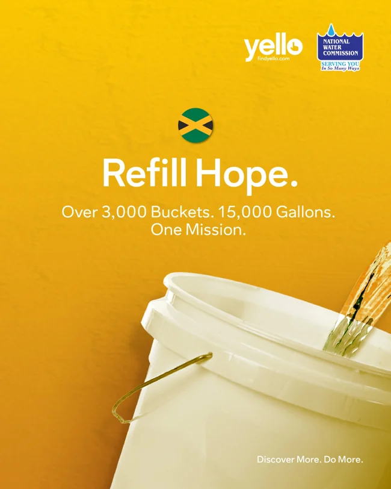

Founder · Kahnec Hub, Jamaica
I’m Kyle Hector.


A two-person shop can look like it has a whole marketing department. One blurry photo can make an established business look like it’s just getting started.
At Kahnec, I find the shot in the work you do every day, then carry that look through your social posts, films and website.
Campaign at Yello Media Group
From an idea to Refill Hope.
I led this water-relief campaign from concept to launch at Yello. Working with the National Water Commission, we turned the partnership into social videos and community updates.
See the campaign
Direct communication.
From idea to execution.
Bring your question, challenge or starting point. We can work through it together.